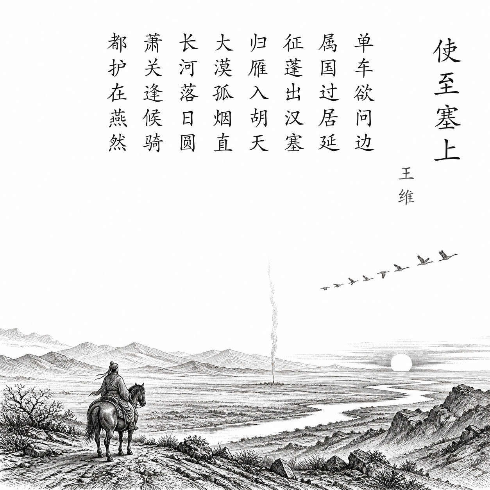

唐 · 王维
使至塞上
单车欲问边，属国过居延。
征蓬出汉塞，归雁入胡天。
大漠孤烟直，长河落日圆。
萧关逢候骑，都护在燕然。
白话翻译
我轻车简从前往边塞慰问，作为使臣经过遥远的居延地区。
像随风飘飞的蓬草越出汉塞，又像北归的大雁飞入胡地天空。
浩瀚沙漠中一缕烽烟笔直升起，长河边一轮落日浑圆低悬。
在萧关遇到侦察骑兵，得知主帅正在前线燕然一带。
为什么写这篇古诗文
737年唐军战胜吐蕃后，王维奉命以监察御史身份赴凉州宣慰、察访军情。这也是一次带有排挤意味的外放。旅途中他以蓬草自比，既写漂泊之感，也写出边塞景象的雄浑开阔。
关于作者
王维（约701—761），字摩诘，盛唐诗人、画家，精通音乐，后世称“诗佛”。其山水田园诗画面清空，同时也留下多首边塞与行旅名篇。